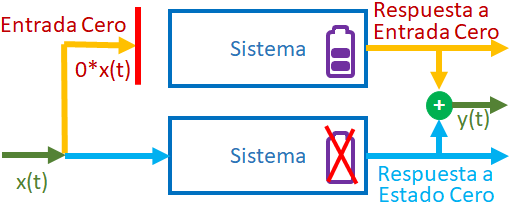

Comité Tutor:
Dr. Martı́n Puchet (FE, Tutor)
Dr. Hector Benitez (IIMAS)
Dr. Manuel Márquez (IIEC )
Dr. Gustavo Carreón (IIEC)
Marzo 2023
| Tema | Resumen del avance |
|---|---|
| Frontera de investigación | Se han delimitado los últimos temas que se cubrirán en la investigación. Aquellos no cubiertos pero relevantes también están determinados y serán enunciados como temas a profundizar. |
| Redacción | Se terminó de escribir el borrador del capítulo 1. Se escribió el modelo sobre inflación y sus resultados (capítulo 3) y se avanzo el capítulo 2, en las partes teóricas sobre la estructura de Hankel y el AF. |
| Código | Se avanzó en el tratamiento de los errores acumulados. Así mismo, se avanzaron los códigos para variaciones de la realización: preservando parte de la estructura de Hankel (promedios, Golub); cambiando el algoritmo de factorización (AFR, AFF, otros); modificando las dimensiones de la matriz de Hankel (ajustando series observadas y realizadas); incorporando nociones de sistemas variantes temporales. |
Partiendo de un sistema...

el cual podamos asumir que es...
Entonces, al expresarlo como...
\[\scriptsize \begin{pmatrix} y_{1}(t)\\ \vdots\\ y_{n}^{(t)} \end{pmatrix}=\begin{pmatrix} a_{11}^{(t)}&\dots&a_{1m}^{(t)}\\ \vdots&\ddots&\vdots\\ a_{n1}^{(t)}&\dots& a_{nm}^{(t)}\\ \end{pmatrix}\begin{pmatrix} x_{1}(t)\\ \vdots\\ x_{m}^{(t)} \end{pmatrix} \]
podemos generar una sucesión con la matriz de cada uno de los periodos disponibles (digamos $k$)...
\[\scriptsize\begin{pmatrix} a_{11}^{(1)}&\dots&a_{1m}^{(1)}\\ \vdots&\ddots&\vdots\\ a_{n1}^{(1)}&\dots& a_{nm}^{(1)}\\ \end{pmatrix}; \begin{pmatrix} a_{11}^{(2)}&\dots&a_{1m}^{(2)}\\ \vdots&\ddots&\vdots\\ a_{n1}^{(2)}&\dots& a_{nm}^{(2)}\\ \end{pmatrix}; \dots; \begin{pmatrix} a_{11}^{(k)}&\dots&a_{1m}^{(k)}\\ \vdots&\ddots&\vdots\\ a_{n1}^{(k)}&\dots& a_{nm}^{(k)}\\ \end{pmatrix}\]
la denominada DESCRIPCIÓN EXTERNA (DE) del sistema
Dicha DE podemos pensarla como "fotografías" que resumen todos los procesos internos del sistema en cada tiempo.
En el caso de sistemas para los que sabemos como se comportan internamente, es decir, que están identificados, esta sucesión se puede convertir en información para cotejar.
Sin embargo, en lo que atañe a los sistemas económicos, nos es imposible observar dichos procesos: el sistema es una CAJA NEGRA.
Si se desea abrir la CAJA NEGRA, se está frente al problema de IDENTIFICACIÓN DEL SISTEMA SUBYACENTE.
La Teoría de la Realización busca realizar dicha identificación.
Esto lo consigue construyendo tres matrices $\LARGE F, G, H$ tiempo-invariantes tales que
$\LARGE HF^{t-1}G\approx L_t(r^*)\approx L_t$
Dicha construcción procede bajo los siguientes pasos...